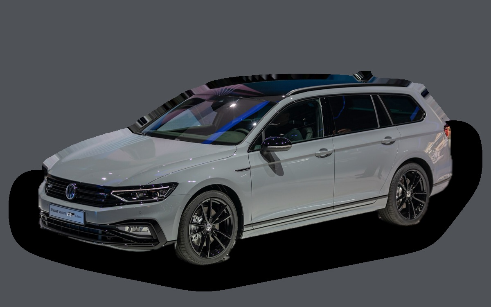

Vad kostar en Volkswagen Passat B8 per månad?
En Volkswagen Passat B8 från 2020 kostar cirka 4 010 kr i månaden, allt inräknat.
4 010 krper månad, årsmodell 2020
190 000 krpris, årsmodell 2020
386 900 krsenaste nypris
Bprisvärdhetsbetyg (2020)

.jpg){kind=link}
Månadskostnad per årsmodell
| Årsmodell | Version i beräkningen | Pris | Per månad | Betyg |
|---|---|---|---|---|
| 2023 | 2.0 TDI 150 DSG, Business | 279 000 kr | 4 598 kr | C |
| 2020 | 2.0 TDI 150 DSG, Business | 190 000 kr | 4 010 kr | B |
| 2017 | 2.0 TDI 150 DSG, Business | 117 000 kr | 3 508 kr | B |
Räknat på 5 års ägande och 1 250 mil per år, med bränslepriser från 2026-10-22. Månadskostnaden innehåller värdeminskning, drivmedel, service och reparationer, försäkring och fordonsskatt.
Så fördelas kostnaden för en 2020:a
- Värdeminskning: 1 366 kr/mån
- Drivmedel: 1 373 kr/mån
- Service och reparationer: 717 kr/mån
- Försäkring: 329 kr/mån
- Fordonsskatt: 224 kr/mån
Begagnatpriser i annonser
| Årsmodell | Medianpris | Annonser | Typiskt miltal |
|---|---|---|---|
| 2023 | 281 400 kr | 52 | 8 700 mil |
| 2022 | 249 400 kr | 56 | 12 200 mil |
| 2021 | 219 900 kr | 59 | 12 700 mil |
| 2020 | 209 900 kr | 68 | 13 200 mil |
| 2019 | 187 000 kr | 55 | 15 500 mil |
| 2018 | 157 800 kr | 111 | 16 600 mil |
| 2017 | 135 000 kr | 103 | 18 500 mil |
| 2016 | 118 500 kr | 85 | 21 500 mil |
| 2015 | 94 900 kr | 132 | 22 000 mil |
Medianpriset i svenska annonser per årsmodell i oktober 2026 (källa: Blocket). Annonspriser är utgångspriser, och slutpriset kan bli lägre.
Motorer och versioner
| Motor | Drivmedel | Effekt | 0–100 km/h | Förbrukning (WLTP) | Räckvidd | Årsmodeller | Pristillägg |
|---|---|---|---|---|---|---|---|
| 2.0 TDI 150 DSG | Diesel | 150 hk | 8,9 s | 4,8 l/100 km | – | 2015–2023 | – |
| GTE laddhybrid 218 | Laddhybrid | 218 hk | 7,6 s | 2,2 l/100 km + 14 kWh/100 km | – | 2015–2023 | +40 000 kr |
| 2.0 TDI 190 4MOTION | Diesel | 190 hk | 7,7 s | 5,5 l/100 km | – | 2015–2023 | +45 000 kr |
- Utrustning: Business, Executive (+30 000 kr)
Fakta
- Kaross
- Kombi
- Årsmodeller
- 2015–2023
- Senaste nypris
- 386 900 kr
- Bagage
- 650 liter
- Euro NCAP
- 5 av 5 stjärnor
- Nybilsgaranti
- 3 år
- Driftsäkerhet
- 4 av 5
- Helförsäkring, uppskattning
- 6 700 kr/år
- Service, uppskattning
- 4 400 kr/år
Vanliga fel att ha koll på
- DSG-låda DQ200 (mekatronik, koppling), reparation cirka 20 000 kr
- Vattenpump och termostathus i plast läcker, reparation cirka 6 500 kr
- EGR och partikelfilter (TDI), reparation cirka 9 000 kr
- Haldex-pump (fyrhjulsdrift), reparation cirka 7 000 kr
- DSG-låda (mekatronik), reparation cirka 18 000 kr
Felen gäller vissa motorer och årsmodeller. I kalkylatorn räknas risken för just den version du väljer.
Fördelar och nackdelar
Fördel
En av Sveriges vanligaste kombibilar, rymlig och billig begagnad.
Nackdel
Tillverkas inte längre.
Liknande bilar
 Volkswagen ID. Buzz4 055 kr/mån som 2023:a
Volkswagen ID. Buzz4 055 kr/mån som 2023:a Saab 9-5 SportCombi3 887 kr/mån som 2007:a
Saab 9-5 SportCombi3 887 kr/mån som 2007:a Volvo V904 174 kr/mån som 2022:a
Volvo V904 174 kr/mån som 2022:a Volvo XC704 186 kr/mån som 2013:a
Volvo XC704 186 kr/mån som 2013:a Volvo V70 II3 828 kr/mån som 2007:a
Volvo V70 II3 828 kr/mån som 2007:a Volvo V604 282 kr/mån som 2023:a
Volvo V604 282 kr/mån som 2023:a
Uppdaterad 2026-10-28 · annonsdata okt 2026